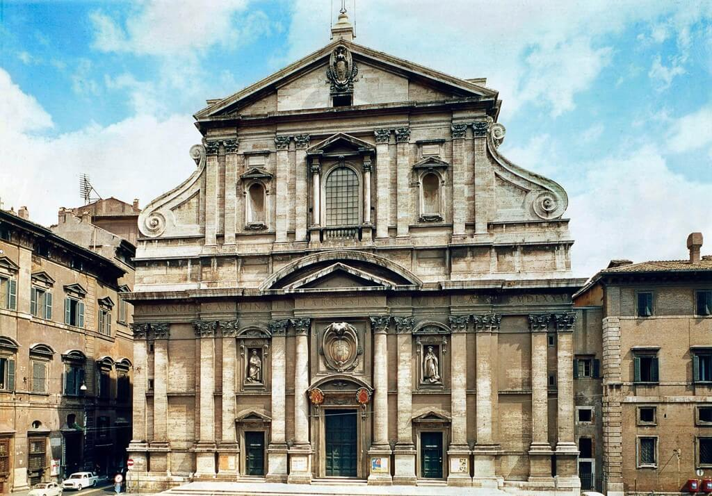
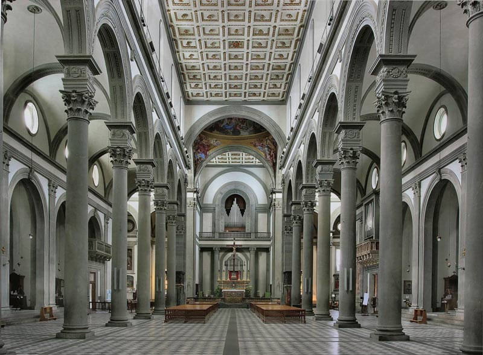

La arquitectura renacentista fue un punto de inflexión histórico, ya que marcó el fin del particular oscurantismo de la Edad Media, y a su vez, inauguró una nueva etapa en el camino de la humanidad, es decir, la Edad Moderna. Como su nombre lo insinúa, la arquitectura renacentista fue producto del Renacimiento, y como parte fundamental del movimiento, adoptó sus ideales y ejes de pensamiento y los extrapoló al diseño de edificios.
Como sucesora del gótico y antecesora del barroco, la arquitectura renacentista asentó las bases para un neoclásico que aún se encontraba macerándose en la historia. Con pulidos cánones estéticos y una pasión por la geometría, la arquitectura del Renacimiento es perfecta para los amantes de las bellas artes.
La arquitectura renacentista es un movimiento que nació gracias al periodo del Renacimiento, y por lo tanto, comprendió del siglo XV al siglo XVI. Su legado radica en abandonar los conceptos medievales y regresar a los cánones de la antiguas culturas griegas y romanas, como parte de la idea del florecimiento que el movimiento respaldó. A diferencia del neoclásico, del siglo XVIII, la arquitectura renacentista ajustó los elementos clásicos a sus edificios, pero no los reprodujo en forma y monumentalidad, como sí lo hizo el neoclasicismo. Asimismo, es notable cómo la arquitectura giró entorno al hombre e integró nuevos materiales, como el mármol, y los mezcló con los tradicionales ladrillos, piedras y maderas.
Además, la arquitectura del Renacimiento también modificó la noción que se guardaba del arquitecto, y separó al proyectista del constructor. Con dicho cambio, tanto los arquitectos como la arquitectura se revalorizaron, para ser un ejercicio profesional y no de artesanos. Entonces, el anonimato de los arquitectos quedó en el olvido, y a partir del Renacimiento, su autoría se grabó en los edificios y en la memoria del pueblo.
El gótico fue un movimiento que se instauró rápidamente en gran parte de Europa, sin embargo, el territorio que hoy se conoce como Italia no se volcó por completo a él. En su búsqueda por encontrar un estilo que se separase de lo gótico, nació la arquitectura renacentista, en Florencia. A lo largo y ancho del continente es común ver edificios con estética gótica y a la vez, frontones griegos o columnas clásicas en la fachada, ya que la transición entre los dos movimientos fue paulatina y, sobre todo, de experimentación. ¿Qué es el Quattrocento? Tanto el Quattrocento como el Cinquecento son los periodos de la arquitectura renacentista. El primero también es conocido como “el primer renacimiento” o “el renacimiento temprano”, y se desarrolló principalmente en Florencia y Toscana. Estéticamente hablando, el Quattrocento fue sencillo e incorporó la arquitectura clásica, como las columnas de fuste liso, los arcos de medio punto y las decoraciones a base de guirnaldas y flores. Al segundo, en cambio, se le dio el nombre de “el renacimiento clásico” o “alto renacimiento”, y tuvo auge en Roma, gracias al apoyo del Papa. A diferencia del primer periodo, el Cinquecento dejó la sencillez y optó por una mayor riqueza de materiales, decoraciones (como esculturas y bajos relieves), y de tamaño.
Entre las principales caracteristicas se encuentran: